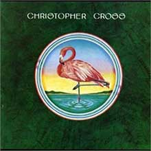

Christopher Cross by Christopher Cross

It beat out Pink Floyd's The Wall at the Grammy's for Album of the Year, so it must have something good to it. It features many of the typical Yacht Rock session musicians, including The Doobie Brothers' Michael McDonald on backing vocals on some songs. The album itself is consistently smooth and makes most sense for classification in the genre.